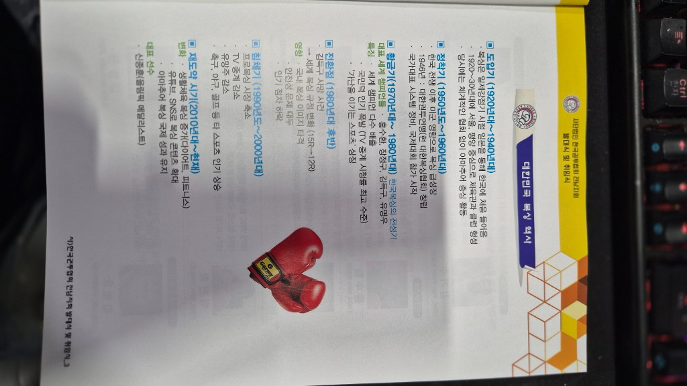
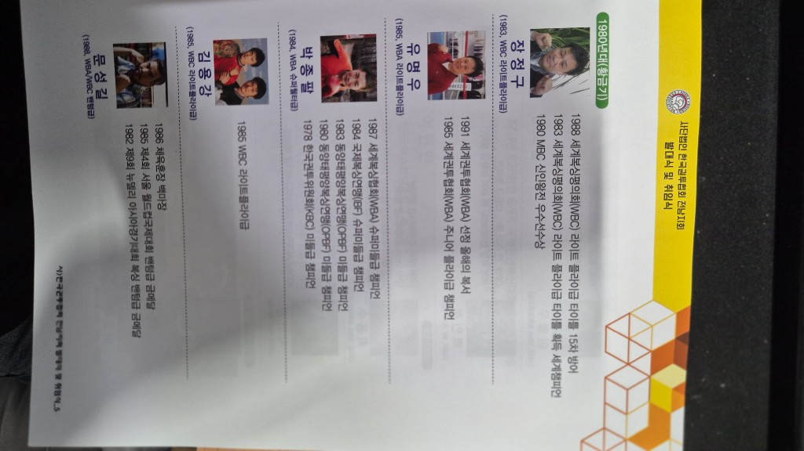

일제강점기 일본을 통해 도입. 서울·평양 중심 체육관·클럽. 아마추어 중심, 체계적 협회는 미비.
TIMELINE
대한민국 복싱 역사
전후 미군 영향으로 급성장. 1946 한국권투연맹(현 한국권투협회의 전신) 창립. 국제대회 참가 시작.
홍수환, 장정구, 김득구, 유명우 등 세계챔피언 배출. TV 시청률 최고, “가난을 이기는 스포츠” 상징.
김득구 선수 사고 이후 안전 이슈, 라운드 규정 변화(15→12). 대중성 점차 하락.
프로 시장·방송 축소, 유망주 감소. 축구·야구·골프 등 타 종목 부상.
다이어트·피트니스형 생활체육으로 전환. 유튜브·SNS 콘텐츠 성장. 아마추어 국제 성적 지속.
CHAMPIONS
프로복싱 세계챔피언 (연도순)
김기수
1966, WBA 주니어미들급
- 1957 전국아마추어 챔피언
- 1958 도쿄아시안게임 웰터급 금메달
- 1965 오리엔트 미들급 챔피언
- 1966 WBA 주니어미들급 세계챔피언
홍수환
1974, WBA 밴텀급
- 1971 OPBF 밴텀급 챔피언
- 1974 WBA 밴텀급 챔피언
- 1977 WBA 주니어페더급 챔피언
- 1977 대통령 표창
유제두
1975, WBA · 전남 고흥 출생 · 여수북싱체육관
- 1975 WBA 주니어미들급 세계챔피언
박찬희
1979, WBA 플라이급
- 1974 테헤란아시안게임 금메달
- 1976 킹스컵 MVP
- 1979 WBC 플라이급 챔피언
장정구
1983, WBC 라이트플라이급
- 1980 MBC신인왕전 최우수선수
- 1983 WBC 라이트플라이급 세계챔피언
- 1988 15차 방어
유명우
1985, WBA 라이트플라이급
- 1985 WBA 주니어플라이급 챔피언
- 1991 WBA 올해의 복서
박종팔
1984, WBA/IBF 슈퍼미들급
- 1978 KBC 미들급 챔피언
- 1980·1983 OPBF 미들급
- 1984 IBF · 1987 WBA 슈퍼미들급
문성길 · 김용강 · 김철호 외
황금기를 빛낸 챔피언들
- 문성길 — 아시안게임·월드컵 금, 체육훈장 백마장
- 김용강 — 1988 WBC 라이트플라이급
- 김철호 — 1981 WBC 슈퍼플라이급
최용수 · 지인진 · 이열우 · 백인철
- 최용수 — 1995~1998 WBA 슈퍼페더급
- 지인진 — 2004 WBC 페더급
- 이열우 — 1987 WBA 슈퍼플라이 / 플라이급
- 백인철 — 1987 IBF 슈퍼미들급
최현미 · 이은혜
- 최현미 — WBA 여성 페더/슈퍼페더급 등
- 이은혜 — WBO·WBA 여성 플라이급 세계챔피언

